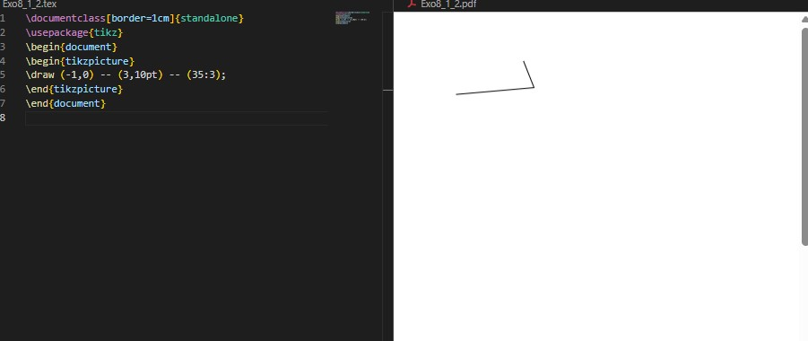
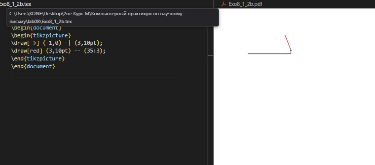
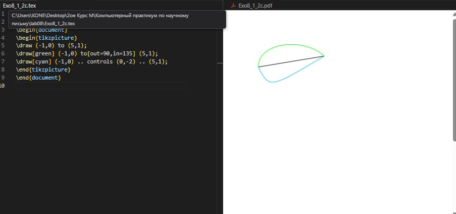
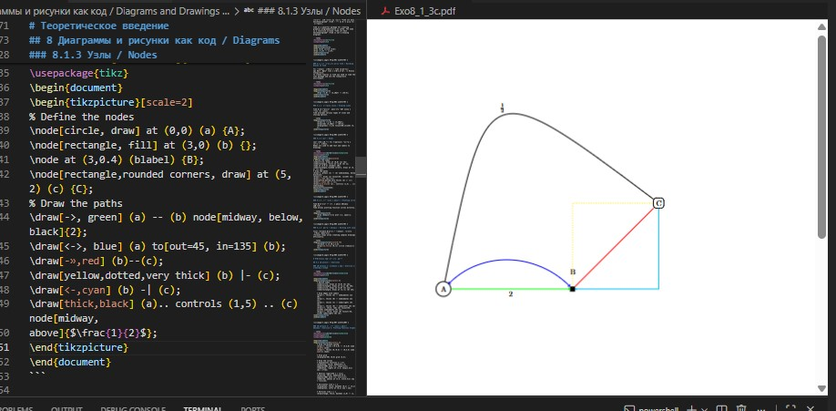
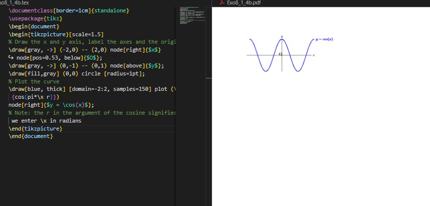
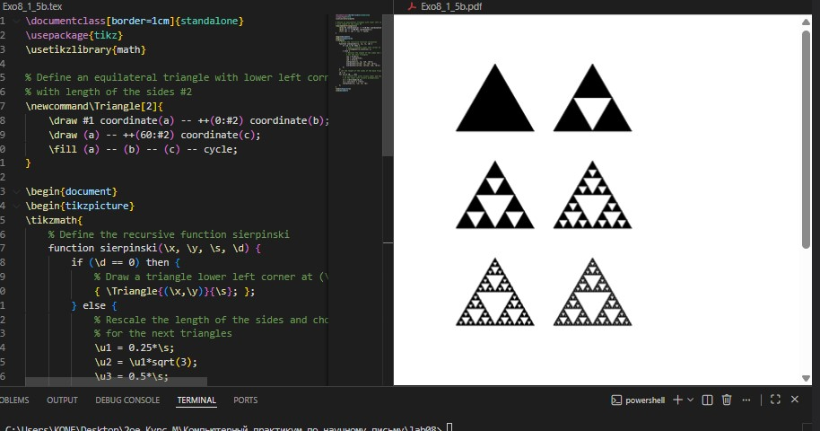
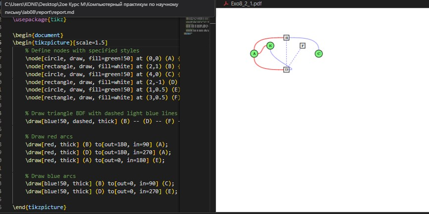
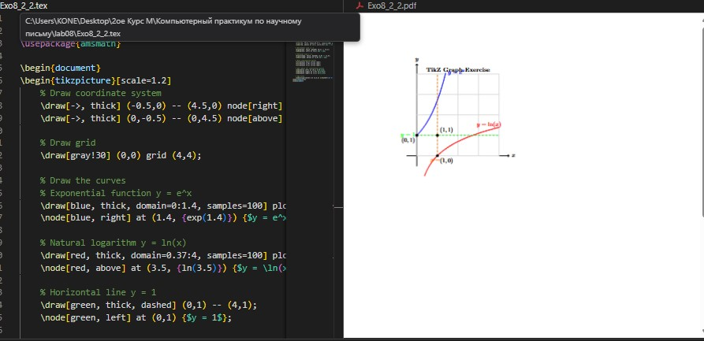
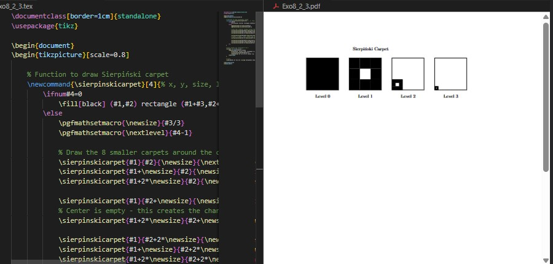

Целью данной лабораторной работы является освоение создания диаграмм и рисунков программным способом в LaTeX с использованием пакета TikZ и других инструментов для визуального представления данных и математических объектов.
The purpose of this lab work is to learn how to create diagrams and drawings programmatically in LaTeX using the TikZ package and other tools for visual representation of data and mathematical objects.
TikZ - это мощный пакет для создания графики программным способом в LaTeX. Название является рекурсивным акронимом "TikZ ist kein Zeichenprogramm" (TikZ - это не программа для рисования).
TikZ is a powerful package for creating graphics programmatically in LaTeX. The name is a recursive acronym "TikZ ist kein Zeichenprogramm" (TikZ is not a drawing program).
\documentclass{article}
\usepackage{tikz}
\begin{document}
\begin{tikzpicture}
\draw (0,0) circle (1cm);
\draw (-1,0) -- (1,0);
\end{tikzpicture}
\end{document}

{ #fig:001 width=70% }Для создания рисунков в TikZ необходимо загрузить пакет tikz и использовать окружение tikzpicture. To create figures in TikZ you need to load the tikz package and use the tikzpicture environment.
\documentclass{article}
\usepackage{tikz}
\begin{document}
\begin{tikzpicture}
\draw (-1,0) -- (3,10pt) -- (35:3);
\end{tikzpicture}
\end{document}

{ #fig:002 width=70% }TikZ предоставляет различные типы линий и стили оформления. TikZ provides various types of lines and styling options.
\begin{tikzpicture}
\draw[->] (-1,0) -| (3,10pt);
\draw[red] (3,10pt) -- (35:3);
\draw[green] (-1,0) to[out=90,in=135] (5,1);
\end{tikzpicture}

{ #fig:003 width=70% }Узлы используются для добавления текста и меток в рисунки. Nodes are used to add text and labels to drawings.
\documentclass[border=1cm]{standalone}
\usepackage{tikz}
\begin{document}
\begin{tikzpicture}[scale=2]
% Define the nodes
\node[circle, draw] at (0,0) (a) {A};
\node[rectangle, fill] at (3,0) (b) {};
\node at (3,0.4) (blabel) {B};
\node[rectangle,rounded corners, draw] at (5,2) (c) {C};
% Draw the paths
\draw[->, green] (a) -- (b) node[midway, below,black]{2};
\draw[<->, blue] (a) to[out=45, in=135] (b);
\draw[-»,red] (b)--(c);
\draw[yellow,dotted,very thick] (b) |- (c);
\draw[<-,cyan] (b) -| (c);
\draw[thick,black] (a).. controls (1,5) .. (c) node[midway,
above]{$\frac{1}{2}$};
\end{tikzpicture}
\end{document}

{ #fig:004 width=70% }TikZ позволяет строить графики функций напрямую. TikZ allows plotting function curves directly.
\documentclass[border=1cm]{standalone}
\usepackage{tikz}
\begin{document}
\begin{tikzpicture}[scale=1.5]
% Draw the x and y axis, label the axes and the origin
\draw[gray, ->] (-2,0) -- (2,0) node[right]{$x$}
node[pos=0.53, below]{$O$};
\draw[gray, ->] (0,-1) -- (0,1) node[above]{$y$};
\draw[fill,gray] (0,0) circle [radius=1pt];
% Plot the curve
\draw[blue, thick] [domain=-2:2, samples=150] plot (\x,
{cos(pi*\x r)})
node[right]{$y = \cos(x)$};
% Note: the r in the argument of the cosine signifies that
we enter \x in radians
\end{tikzpicture}
\end{document}

{ #fig:005 width=70% }Циклы \foreach позволяют создавать сложные рисунки эффективно. \foreach loops allow creating complex drawings efficiently.
\begin{tikzpicture}[scale=0.75]
\foreach \x in {0,1,2,3}
\draw[red,thick] (0,\x) circle [radius=\x+1];
\end{tikzpicture}

{ #fig:006 width=70% }\documentclass[border=1cm]{standalone}
\usepackage{tikz}
\begin{document}
\begin{tikzpicture}[scale=1.5]
% Define nodes with specified styles
\node[circle, draw, fill=green!50] at (0,0) (A) {A};
\node[rectangle, draw, fill=white] at (2,1) (B) {B};
\node[circle, draw, fill=green!50] at (4,0) (C) {C};
\node[rectangle, draw, fill=white] at (2,-1) (D) {D};
\node[circle, draw, fill=green!50] at (1,0.5) (E) {E};
\node[rectangle, draw, fill=white] at (3,0.5) (F) {F};
% Draw triangle BDF with dashed light blue lines
\draw[blue!50, dashed, thick] (B) -- (D) -- (F) -- cycle;
% Draw red arcs
\draw[red, thick] (B) to[out=180, in=90] (A);
\draw[red, thick] (D) to[out=180, in=270] (A);
\draw[red, thick] (A) to[out=0, in=180] (E);
% Draw blue arcs
\draw[blue!50, thick] (B) to[out=0, in=90] (C);
\draw[blue!50, thick] (D) to[out=0, in=270] (E);
\end{tikzpicture}
\end{document}

{ #fig:007 width=100% }\documentclass[border=1cm]{standalone}
\usepackage{tikz}
\usepackage{amsmath}
\begin{document}
\begin{tikzpicture}[scale=1.2]
% Draw coordinate system
\draw[->, thick] (-0.5,0) -- (4.5,0) node[right] {$x$};
\draw[->, thick] (0,-0.5) -- (0,4.5) node[above] {$y$};
% Draw grid
\draw[gray!30] (0,0) grid (4,4);
% Draw the curves
% Exponential function y = e^x
\draw[blue, thick, domain=0:1.4, samples=100] plot (\x, {exp(\x)});
\node[blue, right] at (1.4, {exp(1.4)}) {$y = e^x$};
% Natural logarithm y = ln(x)
\draw[red, thick, domain=0.37:4, samples=100] plot (\x, {ln(\x)});
\node[red, above] at (3.5, {ln(3.5)}) {$y = \ln(x)$};
% Horizontal line y = 1
\draw[green, thick, dashed] (0,1) -- (4,1);
\node[green, left] at (0,1) {$y = 1$};
% Vertical line x = 1
\draw[orange, thick, dashed] (1,0) -- (1,4);
\node[orange, below] at (1,0) {$x = 1$};
% Mark intersection points
\fill[black] (0,1) circle (2pt);
\fill[black] (1,0) circle (2pt);
\fill[black] (1,1) circle (2pt);
% Add labels for intersection points
\node[below left] at (0,1) {$(0,1)$};
\node[below right] at (1,0) {$(1,0)$};
\node[above right] at (1,1) {$(1,1)$};
% Add title
\node[align=center] at (2,4.2) {\textbf{TikZ Graph Exercise}};
\end{tikzpicture}
\end{document}

{ #fig:008 width=100% }\documentclass[border=1cm]{standalone}
\usepackage{tikz}
% Function to draw Sierpiński carpet
\newcommand{\sierpinskicarpet}[4]{% x, y, size, level
\ifnum#4=0
\fill[black] (#1,#2) rectangle (#1+#3,#2+#3);
\else
\pgfmathsetmacro{\newsize}{#3/3}
\pgfmathsetmacro{\nextlevel}{#4-1}
% Draw the 8 smaller carpets around the center hole
\sierpinskicarpet{#1}{#2}{\newsize}{\nextlevel}% bottom-left
\sierpinskicarpet{#1+\newsize}{#2}{\newsize}{\nextlevel}% bottom-middle
\sierpinskicarpet{#1+2*\newsize}{#2}{\newsize}{\nextlevel}% bottom-right
\sierpinskicarpet{#1}{#2+\newsize}{\newsize}{\nextlevel}% middle-left
% Center is empty - this creates the characteristic hole
\sierpinskicarpet{#1+2*\newsize}{#2+\newsize}{\newsize}{\nextlevel}% middle-right
\sierpinskicarpet{#1}{#2+2*\newsize}{\newsize}{\nextlevel}% top-left
\sierpinskicarpet{#1+\newsize}{#2+2*\newsize}{\newsize}{\nextlevel}% top-middle
\sierpinskicarpet{#1+2*\newsize}{#2+2*\newsize}{\newsize}{\nextlevel}% top-right
\fi
}
\begin{document}
\begin{tikzpicture}
% Draw carpets for iterations 0 to 3
\foreach \i in {0,1,2,3} {
\begin{scope}[xshift=\i*4cm]
\draw[black, thick] (0,0) rectangle (3,3);
\sierpinskicarpet{0}{0}{3}{\i}
\node[below] at (1.5,-0.3) {Level \i};
\end{scope}
}
% Title
\node[above] at (6,3.5) {\Large Sierpiński Carpet};
\end{tikzpicture}
\end{document}

{ #fig:009 width=100% }В ходе лабораторной работы №8 я освоил создание диаграмм и рисунков программным способом в LaTeX с использованием пакета TikZ. Изучил основы построения линий, кривых и узлов, освоил создание сложных графиков функций и фрактальных структур. На практике создал различные типы графиков, включая математические функции и рекурсивные структуры такие как ковёр Серпинского и треугольник Серпинского. Полученные навыки позволяют создавать профессиональные научные иллюстрации непосредственно в LaTeX документах.
In this lab work 8, I mastered creating diagrams and drawings programmatically in LaTeX using the TikZ package. I studied the basics of constructing lines, curves and nodes, mastered creating complex function graphs and fractal structures. In practice, I created various types of graphs, including mathematical functions and recursive structures such as Sierpiński carpet and Sierpiński triangle. The acquired skills allow creating professional scientific illustrations directly in LaTeX documents.
::